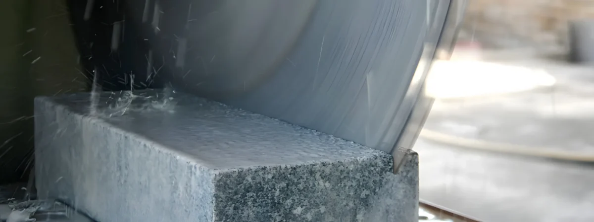
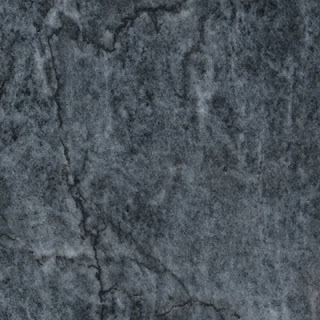
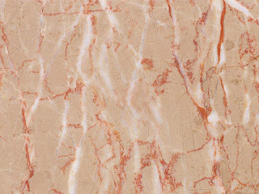
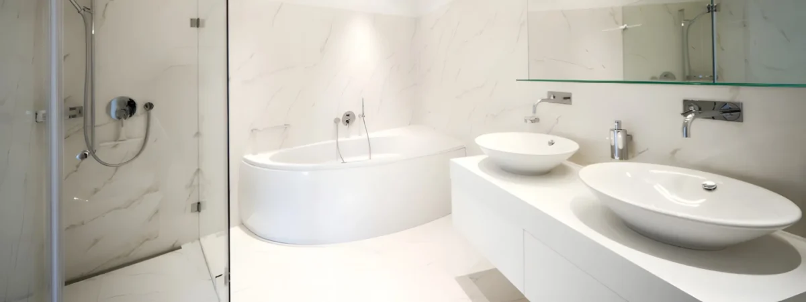
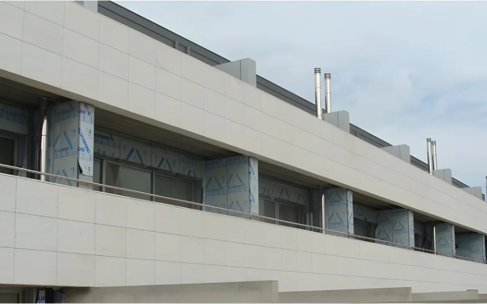

Ligar o material à aplicação
Juntei uma escolha inicial de mármore ou granito ao uso pretendido. A pessoa pode descrever o projeto sem ter de escolher sozinha uma especificação.
Mármores & granitos / Desde 1914
Transformação e aplicação de mármores e granitos. Um percurso entre o material, o desenho da peça e o espaço a que se destina.
Começar pelo material
01 / Material e aplicação
Dois grupos do catálogo oficial. As características de cada material precisam de ser avaliadas em função da aplicação.
O catálogo apresenta diferentes mármores, incluindo Ruivina e Alpinina. O uso, o acabamento e as medidas fazem parte da conversa com a equipa.


Amostras do catálogo. A seleção não altera nem recomenda estas pedras.
02 / Da transformação à aplicação
O site descreve corte, acabamentos, aplicação de pedra e reabilitação. Cada fase tem uma função que pode ser explicada junto do resultado.


Imagens de serviços distintos, publicadas no site oficial. Não representam etapas do mesmo projeto.
Preparar a primeira conversa
Indique uma aplicação e o que já sabe. A escolha final do material e do acabamento fica com a equipa.
Demonstração local: nada é enviado ou guardado. Não indique dados pessoais. O âmbito, a disponibilidade e as condições teriam de ser confirmados com a empresa.
Resumo local · nada foi enviado
A seleção não é uma recomendação técnica nem um orçamento.Uma proposta de Ricardo Almeida
O site já reúne catálogo, serviços e portefólio. Esta proposta aproxima a escolha do material da aplicação e do trabalho de transformação.
Juntei uma escolha inicial de mármore ou granito ao uso pretendido. A pessoa pode descrever o projeto sem ter de escolher sozinha uma especificação.
Proponho filmar uma operação autorizada de transformação ou acabamento, com uma explicação da equipa. Junto do material ou serviço, o filme mostraria o trabalho que a fotografia da peça não explica.
O percurso aceita informação incompleta: material por definir, aplicação prevista e notas. A finalidade é começar a conversa com contexto; esta demonstração não transmite dados.
Um exemplo do meu trabalho
Na Canvas Custom Furniture, filmei e editei a produção e integrei o filme no website. Este projeto mostra como junto imagens do trabalho real à apresentação da empresa.
Ver o projeto CanvasRicardo Almeida · Vídeo e websites